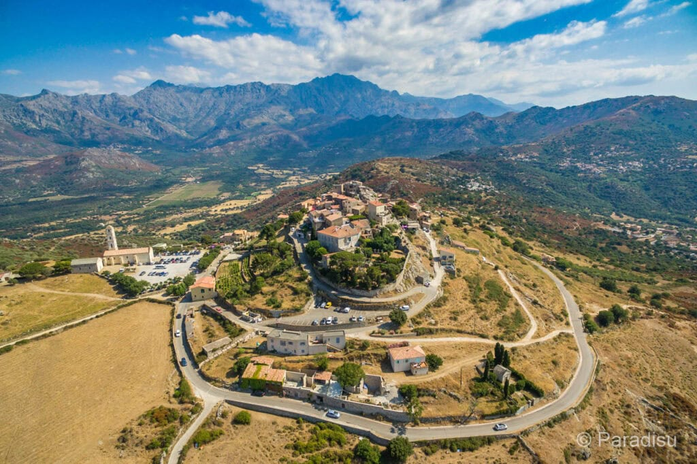

A Sant'Antonino alapítása a 9. századra, a mór kalózok pusztító betöréseinek időszakára nyúlik vissza, amikor a part menti síkságok lakói kénytelenek voltak a megközelíthetetlen, magas sziklacsúcsokra menekülni. A falu építészeti logikája teljesen alárendelődött a védelemnek: a sűrűn egymás mellé, szinte egymás hegyére-hátára épült gránitházak külső fala egyetlen masszív, áttörhetetlen erődrendszert alkot. A szűk, labirintusszerű, fedett átjárókkal és meredek lépcsőkkel szabdalt sikátorok hálózata zseniális katonai tervezésről tanúskodik, hiszen egy esetleges ostrom esetén a támadók mozgását pillanatok alatt korlátozni és kontrollálni lehetett ebben a zárt, kőből faragott világban.
A falu legmagasabb pontjára, az egykori várkastély romjaihoz felkapaszkodva az utazó előtt kibontakozik Korzika egyik legpazarabb, teljes körpanorámája. Innen fentről a tekintet akadálytalanul pásztázhatja az egész hullámzó Balagne-vidéket: a lábunk alatt elterülő, olajfaligetekkel és szőlőültetvényekkel borított termékeny völgyeket, a távoli, csipkés hegygerinceket, valamint a horizonton kéklő Földközi-tengert. A tiszta gránitból emelt épületek patinás felületei a napfény járásának megfelelően folyamatosan változtatják árnyalatukat, az ódon kőfalak között sétálva pedig a látogató úgy érezheti, mintha megállt volna az idő, és közvetlenül a középkori Korzika lüktetésébe csöppent volna bele.
Sant'Antonino kulturális arculatának és mindennapjainak legalább annyira szerves része a helyi gasztronómiai tradíció, mint a lenyűgöző építészet. A falu körüli, napsütötte teraszos kertekben évszázadok óta kiemelkedő minőségű citrusféléket termesztenek, amelyekből a helyiek generációról generációra örökített receptek alapján készítik el a sziget leghíresebb, kézműves citromos hűsítőjét (citronnade). A forró mediterrán napon, az ódon falak hűvös árnyékában megpihenve egy pohár frissen facsart, fanyar és illatos citronnade elfogyasztása nem csupán egy gasztronómiai megálló, hanem a helyi életérzés és a Balagne-vidék ízeinek legtisztább, legautentikusabb megtapasztalása.